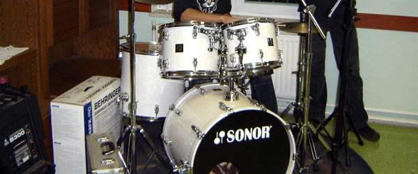

Gitara
Klasična tehnika sviranja prstima i trzalicom, najprije note, a kasnije tabulature s naglaskom na rock i pop. Kasnije solo dionice, rock i blues figure, sweeping i tapping te sviranje u školskim bendovima.
Naslovnica / Programi i instrumenti
Od igraonice za trogodišnjake do srednje glazbene škole: što se uči, koliko traje nastava i tko vas uči.

Kroz igru, pjevanje i sviranje djeca sustavno započinju glazbeno obrazovanje. Najprije uče pjesmice po sluhu i sviraju udaraljke iz Orffovog instrumentarija, a kad ovladaju osnovnim ritmičkim i melodijskim figurama, sviraju na metalofonima prilagođenima njihovu uzrastu.
Svaki predmet održava se jednom tjedno (B-program), odnosno dva puta tjedno (A-program). Na kraju svake godine, osim uvodnog stupnja, slijedi završni ispit iz pismenog i usmenog dijela.
Po jedan sat tjedno · stupanj = 18 radnih tjedana
| Godina | Predmeti | Trajanje |
|---|---|---|
| I. | Glavni predmet · solfeggio · skupno muziciranje (2. stupanj) | 30 · 45 · 60 min |
| II. – IV. | Glavni predmet · solfeggio · skupno muziciranje ili zbor (od 3. god.) | 45 · 45 · 60 min |
| V. | Glavni predmet · solfeggio · skupno muziciranje (korepeticija za klaviriste) | 60 · 45 · 60 min |
| VI. | Glavni predmet · solfeggio · skupno muziciranje · klavir kao obvezno glazbalo (9 sati po semestru) | 60 · 45 · 60 · 30 min |
Skupno muziciranje (gitara, bas gitara, bubnjevi, tambure i pjevanje) upisuje se na drugom stupnju.
Po dva sata tjedno · nastavna godina = 35 radnih tjedana
| Godina | Predmeti | Trajanje |
|---|---|---|
| I. – II. | Glavni predmet · solfeggio | 30 · 45 min |
| III. | Glavni predmet · solfeggio · skupno muziciranje (jednom tjedno) | 30 · 45 · 60 min |
| IV. – VI. | Glavni predmet · solfeggio · skupno muziciranje (jednom tjedno) | 45 · 45 · 60 min |
| VI. | Izborno: klavir ili teorija glazbe | 30 min |
Skupno muziciranje: zbor, orkestar ili komorna glazba. Predmeti: klavir, violina, viola, violončelo, kontrabas, gitara, tambure (bisernica, brač), harmonika, udaraljke, flauta, blokflauta, klarinet, saksofon, oboa, fagot, truba, trombon.
Srednjoškolski program traje četiri godine, odnosno osam stupnjeva. Glavni predmet traje 60 minuta, uz solfeggio i skupno muziciranje.

Individualna nastava za sve instrumente, uz solfeggio i skupno muziciranje. Ukratko o svakom predmetu:
Klasična tehnika sviranja prstima i trzalicom, najprije note, a kasnije tabulature s naglaskom na rock i pop. Kasnije solo dionice, rock i blues figure, sweeping i tapping te sviranje u školskim bendovima.
Note, sviranje prstima desne ruke, lijep ton i osjećaj za ritam od prvog sata. Na višim stupnjevima slap, walking bass i arpeggia, te stilovi poput funka i fusiona.
Nastava u tri područja: tehnika, koordinacija i muziciranje. Postav tijela, držanje palica, neovisnost ruku i nogu, ritmovi, prijelazi, sola i čitanje notnog teksta.
Konge, bongosi, timbalesi, zvono, marakas – od osnovnih ritmičkih figura i tehnike palicama na malom bubnju do poliritmičkih dionica i groovea s bubnjevima i basom.
Tehničke osnove, intonacija i ritam, fraziranje i dikcija te nastup pred publikom. Skladbe klasične, popularne i rock glazbe, uz solfeggio i skupno muziciranje.
Od jednostavnih melodija po sluhu do Mozarta, Beethovena, Chopina i Rachmaninova – ali i jazza, popa i rocka. Gradivo se prilagođava brzini napredovanja svakog učenika.
Osjećaj za lijep ton, intonaciju i melodiju, uz koncentraciju i radne navike. Početak je nešto teži, a nakon usvajanja osnova učenje postaje brže i lakše.
Tenor gudačke obitelji, topao i moćan ton. Individualan pristup ovisno o dobi – od klasične literature do etna, jazza i rocka.
Najčešće se počinje na alt saksofonu: upoznavanje instrumenta, postava usnica i disanje, a zatim skupno muziciranje i prvo iskustvo sviranja u sastavu.
Tehnika disanja, postavljanje tona, legato i ljestvice, a za naprednije dvostruki i trostruki jezik, glissando i jazz vokabular. Individualno i u manjim grupama.
Pravilno držanje i lijep ton, zatim trzanje – najzahtjevnija vještina koja se razvija tijekom cijelog školovanja. Domaća tradicijska i klasična literatura, sviranje u orkestru.
Individualna nastava od 18 sati po 45 minuta i praktični dio na koncertu i u studiju. Ako se formira grupa, nastavni sat se produžava.
Glazbena pismenost: intonacijska i ritamska znanja potrebna da biste zapisali ono što čujete i otpjevali ono što je zapisano. Glazba se uči kao jezik.
Vrste i struktura akorda, njihovo nizanje i spajanje. Nitko ne dolazi u školu zbog harmonije, ali s njom sve sviramo bolje. Uz nju i polifonija i glazbeni oblici.
Bendovi, zbor, orkestar i komorna glazba. Ovdje se znanje s individualnih sati pretvara u zajedničko sviranje – i u nastupe.
Za kvalitetnije i brže usvajanje gradiva i vježbanje kod kuće polaznici trebaju instrument već na prvom satu. Školski instrumenti i oprema iznajmljuju se na najmanje pet mjeseci.

Javni satovi, koncerti, smotre i natjecanja sastavni su dio nastave – jer takav rad doprinosi cjelovitoj glazbenoj naobrazbi.
Termini nastave dogovaraju se prilikom upisa. Naknadni upisi po dogovoru na 095 910 2412.
Novi polaznici prolaze provjeru slušnih i ritamskih sposobnosti. Učenici s predznanjem i kandidati za pjevanje pristupaju audiciji.
Tijekom godine kolokviji te usmene i pismene provjere znanja, a na kraju godine završni ispit iz svih predmeta.
A-program: verificirana svjedodžba. B-program: potvrda o završenoj godini i mogućnost privatnih ispita u veljači i lipnju – i dvije godine u jednoj.
Ravnatelj škole je Zdravko Miladin, mag. mus.
Javite nam se – zajedno ćemo odabrati program, instrument i termin koji vam odgovara.